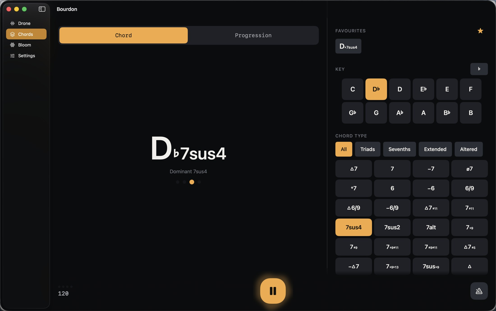
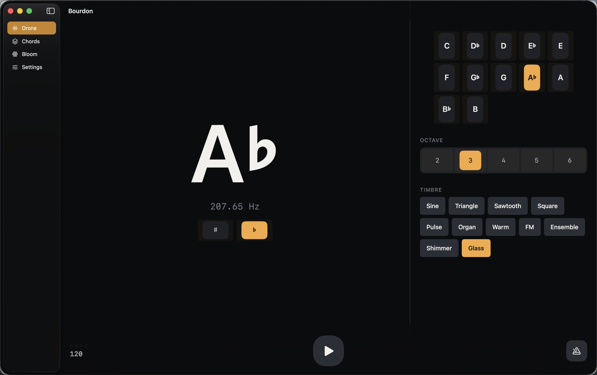
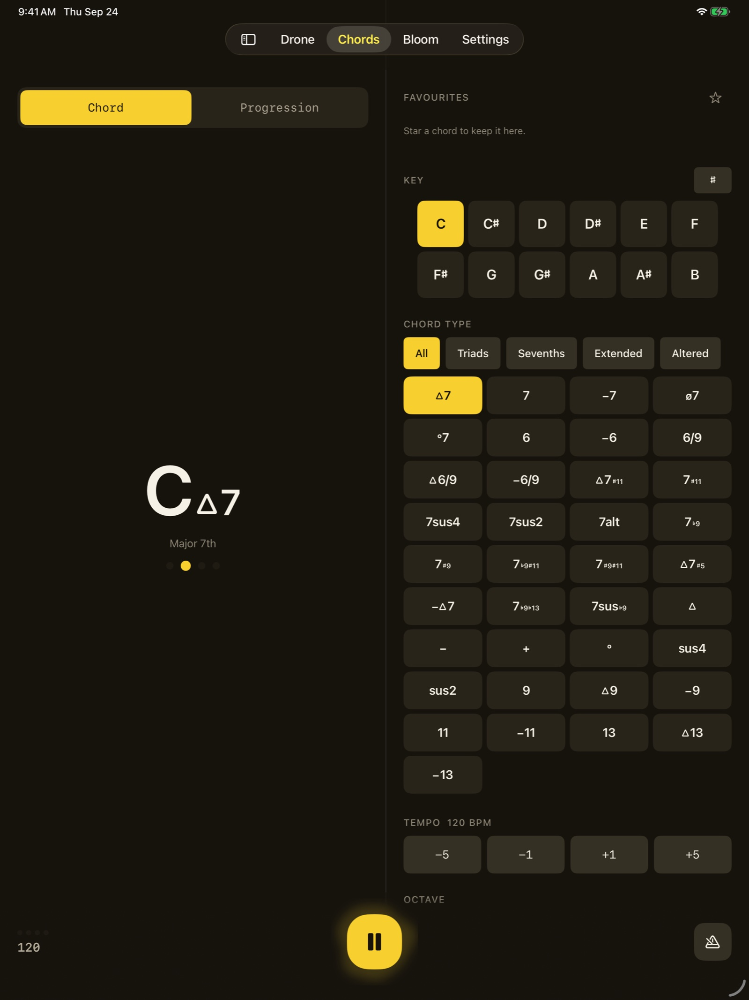
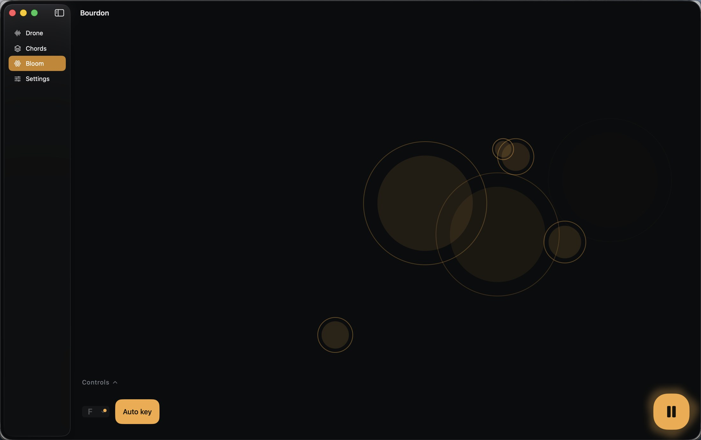
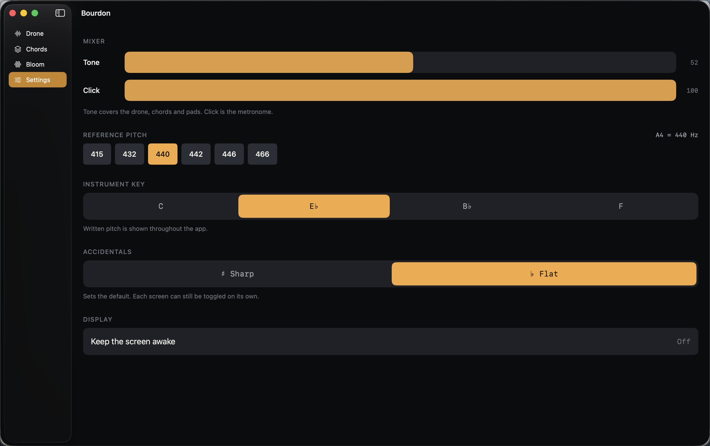
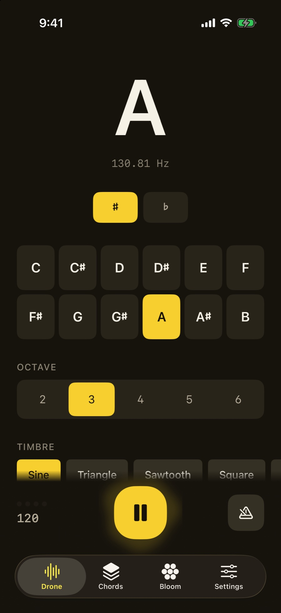
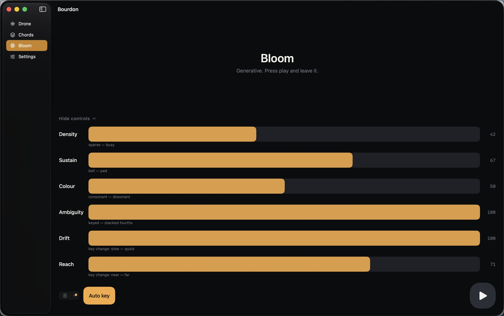

A drone holds a pitch so you can hear whether yours is true. Bourdon holds that pitch, or a whole chord, for as long as you want to play over it — with a metronome alongside that can keep time without making a sound.

Pick a pitch and it sounds until you stop it — through a lock, through a backgrounded app, through a whole practice session with the phone on a stand. Eleven timbres, from a bare sine to something with enough body to tune against. The reference pitch is yours to set: 415 for baroque, 442 if that is what the room is doing.
The pitch is the biggest thing on screen, because you are looking at it from behind an instrument.
Keep the beat visible without a click over the top of what you are practising.

Thirty-seven chord types in twelve keys, held as a sustained voicing. Chord symbols are typography, not text: the root, the quality, the extension and the alteration each get their own optical size, so C△7♯11 reads as a C with markings rather than six characters of equal weight. Star the ones you keep coming back to and they are one tap away.
Build a sequence in roman numerals — bars per step, voicing octave per step — and it cycles at your tempo while you improvise over the changes. The chord lands on the same clock that produces the beat, because anything else is audible.

A generative tab that writes itself. Notes arrive on an irregular schedule with long tails, so the texture is always partly decaying and never lands on a beat. Nothing to tap, nothing to arrange — but if you want to steer it, six controls decide what it plays rather than how loud it is.

Widens the pitch collection from root-and-fifth out to the tritone and the minor ninth, and shifts which part of it is favoured.
Quartal motion: the next note a fourth from one already sounding. Stacked fourths hold no third, so they belong to no key in particular.
How often it changes key, and how far — measured in fifths, because C to G shares six notes of seven and C to F♯ shares two.

Reference pitch from 415 to 466. Written pitch for transposing instruments, so an E♭ alto sees what it reads rather than what it sounds. Sharps or flats as the default, overridable per screen. An independent balance between tone and click, because a metronome under a drone needs to sit somewhere specific.

iPhoneOn a stand, at arm's length
MacSidebar, menu bar, ⌘ReturnA single small purchase, priced at launch. No ads, no subscription, no in-app purchases, and no free tier holding a feature back — you get the whole app.
Nothing. There is no account, no analytics, and no networking code in the app — absent rather than switched off. Your settings live on your device and go when it does.
Yes. A drone on a music stand keeps sounding with the screen off, and what is playing shows in Control Center and on the Lock Screen. A call interrupts it and it resumes after.
415, 432, 440, 442, 446 or 466. Transposing instruments can set a written pitch too, so a B♭ tenor sees the note it reads while hearing the one that sounds.
Meter, subdivision, per-beat accents, click patterns, four sounds — and it can run silent. It shares a clock with the chord changes, so a progression lands on the beat rather than near it.
The drone string on a hurdy-gurdy, and the organ stop that holds a low pitch under everything else. Which is the whole idea: something steady to play against.